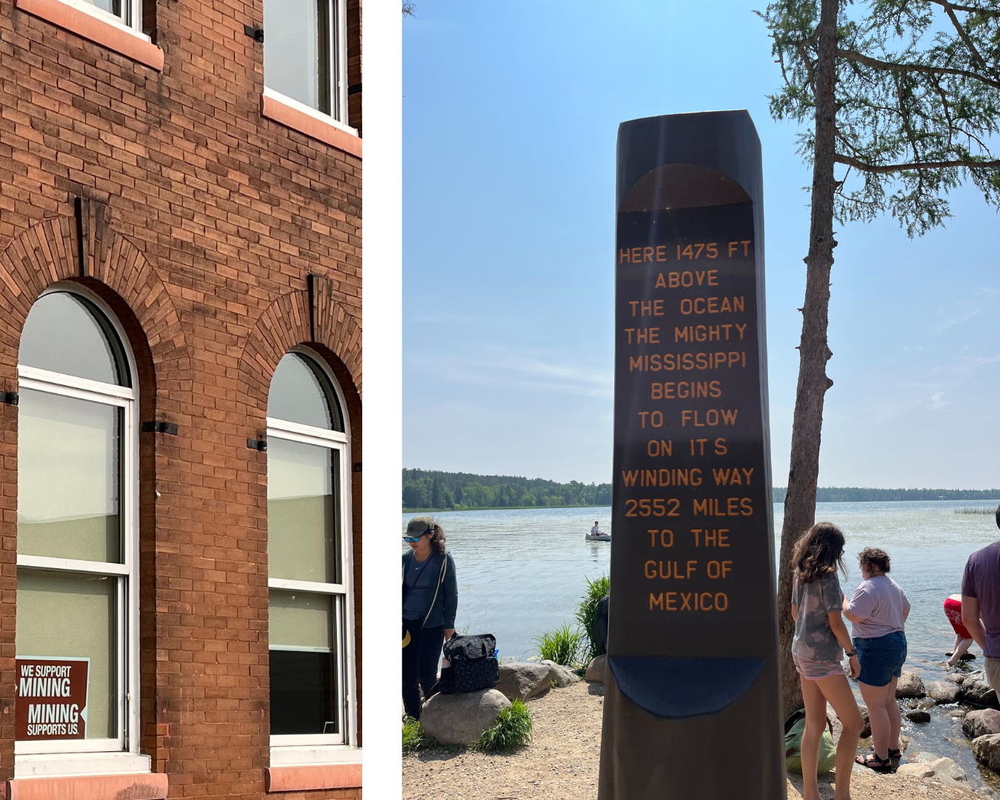
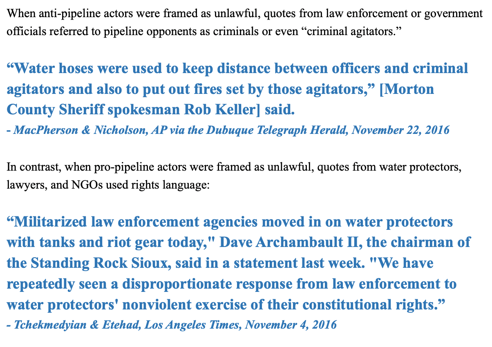
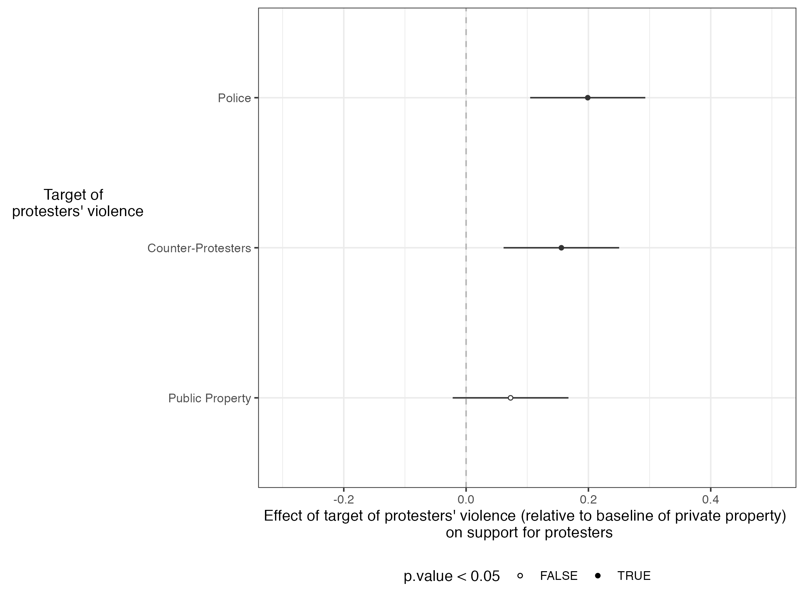

My qualitative work includes my dissertation, which studies the discourses people and groups use to speak out in favor of natural resource projects like Minnesota’s Line 3 Pipeline, using data from semi-structured interviews, public comments, and tweets.

Other work:
Framing the water protectors: Settler colonialism, dynamic framing, and news coverage of the #NoDAPL movement

Abstract: When thousands of water protectors gathered at Standing Rock to stop the Dakota Access Pipeline in 2016, the mainstream news media ignored the movement, and then framed it negatively. But was media framing uniformly hostile to the movement across time? And if not, when were #NoDAPL Indigenous voices included, and under what conditions did the news media use more sympathetic framing of the movement? This paper analyzes how the contemporary U.S. news media depicted an Indigenous-led movement at different points in time and argues that coverage was dynamic, with later coverage including more sympathetic framing of the movement. While journalists typically have few relationships with Indigenous sources in settler colonial societies, shaping negative early coverage of movements, coverage is not static. As movement actions continue and are deemed newsworthy, journalists interact with Indigenous movement actors more and coverage becomes more sympathetic to the movement.
Solidarity with Racialized Protest Movements: Testing Factors Impacting Support for Black Protestors after Reports of Protest Violence
with Young & Leung
invited to revise and resubmit at Politics, Groups, and Identities

Abstract: During the George Floyd protests, despite instances of reported violence, the majority of the American public continued to stand in support of the movement. This offers a theoretical puzzle as the literature on protests movements suggests that violent protest is very likely to drive down public support for a social movement. To this end, we develop a factorial survey experiment to test the conditions under which the public may remain in support of a movement like Black Lives Matter (BLM), even after the public receives reports of violence concerning particular protest incidents. We test three main variables, the targets of the violence, the motivation for the protest, and whether the protesters had a clear organizational structure. We theorize that each of these factors could contribute to the perceived legitimacy of the movement, offsetting the potential negative public opinion effects of protest violence. We find that respondents were most likely to remain in support of protestors when the reported protest violence was directed against the police or counter protestors, rather than private property. We also find that the protests having a clear motivation impacted the degree of support, although the distinction between protests against specific instances of violence and systemic issues was not impactful.